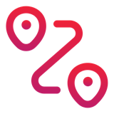

Cheat sheet · L'IA sous le capot, version métiers · 1/2
Le dictionnaire de la route
Une image pour chaque mot qu'on entend en réunion.
Une entreprise de livraison
| On dit | Pensez à |
|---|---|
| LLM | le moteur : puissant, il ne livre rien seul |
| SLM | la citadine : petite, économique, reste au garage |
| Agent | le véhicule en mission, qui choisit sa route |
| Harness | son équipement : outils, autorisations, consignes |
| Orchestrateur | le dispatch : répartit les tournées |
| SDD | le dispatch par bons de commande signés |
| Guardrails | les contrôles du boîtier, aller et retour |
| Gateway | le boîtier entre véhicule et moteur : bride, compte |

Pas à pas, bus ou taxi ?| Qui décide du trajet ? | |
|---|---|
| Pas à pas · chatbot | vous : chaque commande, une course |
| Bus · workflow | le programme : trajet fixé à l'avance |
| Taxi · agent | l'IA : souple, moins prévisible |
Prenez la solution la plus simple qui marche : si le trajet est connu, un bus suffit.
 Le moteur sous le capot
Le moteur sous le capot
- Usine à moteurs : fabriqué, réglé, testé, puis figé. Il n'apprend plus en vous parlant.
- Briques de Lego (tokens) : il lit, écrit et facture en morceaux de mots.
- Autocomplétion géante : il prédit la suite la plus plausible, pas la plus vraie.
- GPS des sens (embeddings) : les mots proches habitent le même quartier.
- Plan de travail (context window) : sa seule mémoire, limitée, vidée à chaque conversation. Trop plein : il oublie le début et se perd au milieu.
- GPS sûr de lui (hallucination) : assuré ne veut pas dire exact.
- Curseur de créativité (température) : régulier ou inventif.
- Taxi au compteur : on paie ce qu'on envoie et ce qu'on reçoit ; le trajet habituel (cache) coûte moins.
Citadine ou poids lourd ?
Citadine · SLMtâches simples et répétitives, données qui ne sortent pas
Poids lourd · LLMraisonner, rédiger, tâches difficiles, dans le cloud
Les chevaux du moteur = ses paramètres : plus il y en a, plus il est puissant, et gourmand.
 5 réflexes pour lundi matin
5 réflexes pour lundi matin
- Nouveau sujet, nouvelle conversation.
- Donnez vos documents plutôt que d'espérer qu'il sache.
- Vérifiez chiffres, noms, dates et sources.
- Écrivez le bon de commande avant de lancer un agent.
- Jamais les trois : clés, inconnu, porte ouverte.